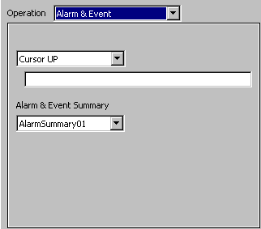

|
|
|
|
|
|
|
|
Use the dialog to set up alarm and event operations. For more information about creating alarm and event operations, see Section 16.2.7, Creating Alarm and Event Operations.

Alarm and event operations apply only to switches.

Select an operation for the switch that interacts with the specified alarm and event summary.
|
Operation |
Description |
|
Cursor ON |
Show the cursor. |
|
Cursor OFF |
Hide the cursor. |
|
Cursor UP |
Moves the Summary cursor position one line up. |
|
Cursor DOWN |
Moves the Summary cursor position one line down. |
|
Page UP |
Moves the Summary cursor position one page up. |
|
Page DOWN |
Moves the Summary cursor position one page down. |
|
JUMP |
Jump to row (1-9999). |
|
Move Top |
Moves the cursor to the top of the Summary. |
|
Move Bottom |
Moves the cursor to the bottom of the Summary. |
|
Show Action |
Runs the touch action defined for the alarm message. Not available for events. |
|
Ack |
Acknowledges the currently selected alarm. Not available for events. |
|
Ack All |
Acknowledges all messages in the Alarm Summary. Not available for events. |
|
Clear |
Clears the selected alarm. The cleared alarm will not appear in the alarm summary until the alarm returns to normal and then activates. Not available for events. |
|
Clear All |
Clears all the alarms in the alarm summary. The cleared alarms will not appear in the alarm summary until the alarms return to normal and then activate. Not available for events. |
|
Delete |
Deletes the selected alarm. Not available for events. |
|
Delete All |
Deletes all the alarms in the Alarm Summary or in the Event Summary. |

The only Alarm and Event operations you can set up in the While Touch tab are Cursor Up, Cursor Down, Page Up, and Page Down.